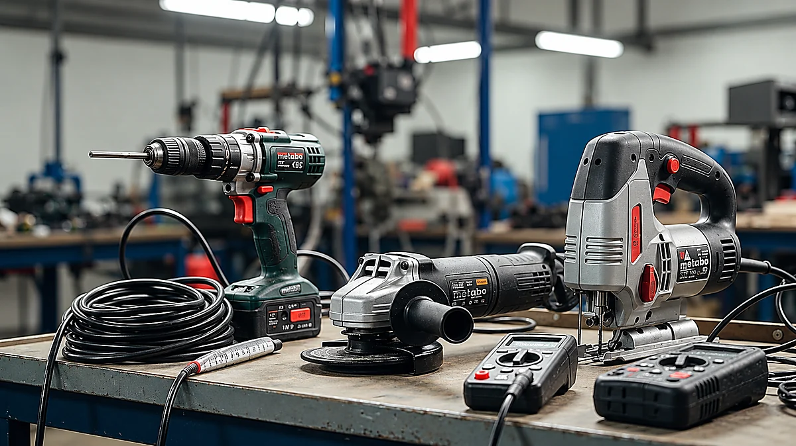

Onderhoud en keuring
We komen langs, lopen alles na en doen het onderhoud ter plekke. Je houdt er een controlesticker per toestel en een rapportage aan over.
Dit hoort op orde te zijn
Je verzekeraar, de gemeente of een inspecteur kan naar je onderhoud vragen. Daarnaast staat het in het Bouwbesluit en de Arbowet, en heb je als werkgever een zorgplicht. Voor blussers geldt daarbij NEN 2559.
Wij zijn REOB-erkend, dus het werk gebeurt volgens vaste eisen en wij worden daar zelf ook op gecontroleerd. Dat is wat een verzekeraar wil zien.

Waar we naar kijken
- Druk en verzegeling
- Staat van behuizing en slang
- Bereikbaarheid en zichtbaarheid vanaf de werkplek
- Etikettering
- Noodverlichting en vluchtwegaanduiding
- Elektrisch gereedschap volgens NEN 3140
De levensloop van een blusser
-
Periodieke controle
Elk jaar. Algehele staat en plaatsing.
-
Uitgebreid onderhoud
Elke vijf jaar. Het toestel gaat open en wordt van binnen beoordeeld.
-
Revisie
Elke tien jaar. Helemaal nagelopen en opnieuw gevuld.
-
Vervangen
Na twintig jaar, of eerder bij afkeuring.
Haspels volgen een eigen ritme: elk jaar een controle, elke vijf jaar een beproeving van de slang op de maximale voorgeschreven druk. Het verplichte logboek beheren wij kosteloos voor je.
Ook je elektrisch gereedschap
Gereedschap slijt aan de binnenkant. Een aangetaste isolatie zie je niet, een meting wel. Wij keuren je machines volgens NEN 3140 en leggen dat vast in een keuringsrapport, waarmee je voldoet aan het Arbobesluit.
Is er iets stuk, dan repareren we het meestal. Kleine reparaties doen we direct; bij grotere krijg je eerst een prijsopgave.

Wat je overhoudt aan het bezoek
Een controlesticker per toestel en een rapportage: wat is gekeurd, wat is vervangen en wat er opviel. Dat is het papier voor je verzekeraar.
We melden het ook als iets nog jaren mee kan. Vervangen wat niet vervangen hoeft, kost jou geld en levert niemand veiligheid op.
Wanneer zijn jouw blussers voor het laatst nagekeken?
Weet je het niet zeker, dan is dat op zich al een antwoord. Mail waar je gevestigd bent, dan kijken we mee.
Neem telefonisch contact op
- Geert 06-29378342
- Sandy 06-55122876
- maandag t/m vrijdag, 08.30–17.00 uur